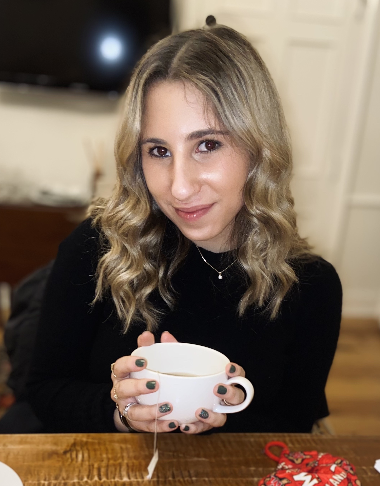

Maxine Friedman
Journalism Student

Contact Information
Multiplatform journalist seeking investigative journalism opportunities.
Experience
Freelance Journalist
University of Maryland Student Publications
February 2020 - Present
- Develop unique and underreported stories for the University of Maryland’s digital publications such as Stories Beneath the Shell and The Diamondback, as well as WMUC Radio’s flagship news show “Weekly Roundup.”
- Write, edit, and pitch engaging, detailed stories in AP style and take photographs to supplement stories.
- Recent stories include: an annual entrepreneurial contest, politics on campus, a COVID-19 study on campus, student life, and more.
Social Media and PR Intern
Chantecaille Beaute, Inc.
May - August 2021
- Wrote copy and created attractive visuals for social media platforms such as Instagram, Facebook, and TikTok.
- Produced multiple posts, which reached an audience of over 200,000 followers and culminated an average of 1,000 impressions per post.
- Updated international press decks weekly to consistently inform the field team of marketing and sales progress and recognition.
- Promoted Chantecaille's visibility by assembling personalized shipments sent to social media influencers, editors, and celebrities.
Intern
NewTV (Newton News)
June - August 2020
- Authored, filmed, produced, and edited one to two news stories each week for a local broadcast news station using state of the art technology and software such as a Pro HD Compact Shoulder Mount Camera and Final Cut Pro X.
- Anchored 20 segments on local events and public meetings such as virtual high school graduations, city council meetings on reimagining the police budget, local elections, Black Lives Matter peaceful protests, and more.
- Extensively vetted various sources and conducted rigorous interviews to ensure residents were fully informed on noteworthy local events.
Education
The University of Maryland - College Park
- Major: Journalism
- Minor: Law and Society (MLAW Programs)
- Expected graduation: 2023
Skills
- video production
- data-analysis
- informative multimedia reporting
- photojournalism
- social media
- copyediting and copywriting
- establishing and maintaining contacts
- AP style